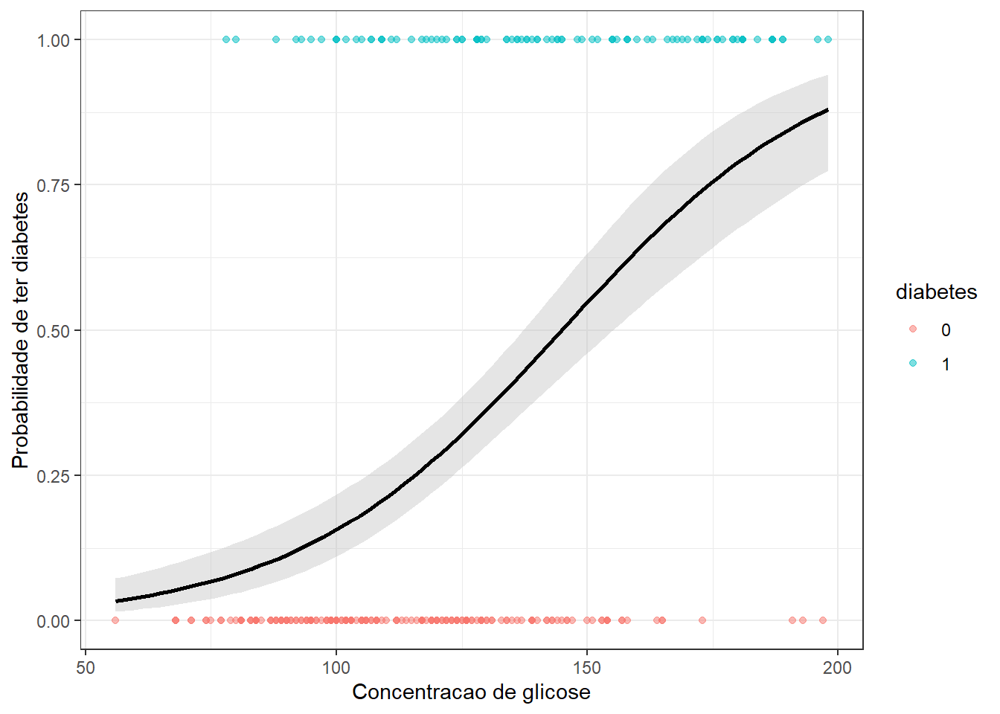

library(AER) # para base de dados
library(ggplot2) # para gráficosAprendizado supervisionado - Laboratório 1 de R
Aprendizado supervisionado
Visão geral das aulas de laboratório
Exemplo de problema de regressão
Carregando as bibliotecas (pacotes) para análise.
Carregando base de dados.
data(USConsump1993)
# ?USConsump1993Consumo <- data.frame(USConsump1993)
head(Consumo) income expenditure
1 6284 5820
2 6390 5843
3 6476 5917
4 6640 6054
5 6628 6099
6 6879 6365Separando 75% dos dados para treino do modelo e 25% para teste.
tr <- round(0.75*nrow(Consumo))
set.seed(9)
treino <- sample(nrow(Consumo), tr, replace = F)
Consumo.tr <- Consumo[treino,]
Consumo.te <- Consumo[-treino,]head(Consumo.tr) income expenditure
6 6879 6365
24 11013 9752
19 9399 8506
3 6476 5917
12 7382 6740
30 12039 10876head(Consumo.te) income expenditure
4 6640 6054
7 7080 6440
8 7114 6465
10 7256 6658
13 7583 6931
20 9606 8737Treinando um modelo de regressão linear simples.
lm1 <- lm(expenditure ~ income, data = Consumo.tr)
summary(lm1)
Call:
lm(formula = expenditure ~ income, data = Consumo.tr)
Residuals:
Min 1Q Median 3Q Max
-286.54 -73.56 -0.51 96.98 336.60
Coefficients:
Estimate Std. Error t value Pr(>|t|)
(Intercept) -58.29055 107.46593 -0.542 0.591
income 0.91435 0.01015 90.111 <2e-16 ***
---
Signif. codes: 0 '***' 0.001 '**' 0.01 '*' 0.05 '.' 0.1 ' ' 1
Residual standard error: 153.3 on 31 degrees of freedom
Multiple R-squared: 0.9962, Adjusted R-squared: 0.9961
F-statistic: 8120 on 1 and 31 DF, p-value: < 2.2e-16Plotando o modelo com dados de treino.
ggplot(data = Consumo.tr, aes(x = income, y = expenditure)) +
geom_point(color = 'red', size = 2) +
geom_smooth(method = "lm", formula = y ~ x) +
xlab("renda") +
ylab("consumo") + theme_bw()Realizando previsão com o modelo.
predict(lm1, newdata = data.frame(income = 9000)) 1
8170.855 Previsão para todos dados de teste.
Consumo.te$exp_pred <- predict(lm1, newdata = data.frame(income = Consumo.te$income))
head(Consumo.te) income expenditure exp_pred
4 6640 6054 6012.990
7 7080 6440 6415.304
8 7114 6465 6446.392
10 7256 6658 6576.229
13 7583 6931 6875.222
20 9606 8737 8724.951Plotando o modelo com os dados de teste.
ggplot() +
geom_point(data = Consumo.te, aes(x = income, y = expenditure), size = 2) +
geom_smooth(method = "lm", formula = y ~ x,
data = Consumo.tr,
aes(x = income, y = expenditure)) +
xlab("renda") +
ylab("consumo") + theme_bw()Criando uma função de métricas de desempenho.
metrics <- function(obs, pred) {
RSE <- sum((obs - pred)^2)
SST <- sum((obs - mean(obs))^2)
R2 <- 1 - RSE/SST
MAE <- mean(abs(obs - pred))
RMSE <- sqrt(mean((obs - pred)^2))
return(
data.frame(RMSE = RMSE,
MAE = MAE,
R2 = R2))
}Desempenho do modelo para dados de teste.
metrics(Consumo.te$expenditure, Consumo.te$exp_pred) RMSE MAE R2
1 154.9765 115.8476 0.9963915Exemplo de problema de classificação
library(mlbench)data(PimaIndiansDiabetes2)
# ?PimaIndiansDiabetes2PimaIndiansDiabetes2 <- na.omit(PimaIndiansDiabetes2)
PimaIndiansDiabetes2$diabetes <- ifelse(PimaIndiansDiabetes2$diabetes=="neg",0,1)
dados <- PimaIndiansDiabetes2
head(dados) pregnant glucose pressure triceps insulin mass pedigree age diabetes
4 1 89 66 23 94 28.1 0.167 21 0
5 0 137 40 35 168 43.1 2.288 33 1
7 3 78 50 32 88 31.0 0.248 26 1
9 2 197 70 45 543 30.5 0.158 53 1
14 1 189 60 23 846 30.1 0.398 59 1
15 5 166 72 19 175 25.8 0.587 51 1set.seed(7)
treino <- sample(nrow(dados), 0.75*nrow(dados))
dados_treino <- dados[treino,]
dados_test <- dados[-treino,]Obtendo um modelo de regressão logística simples a partir dos dados de treino considerando apenas uma variável regressora, o nível de glicose.
model1 <- glm( diabetes ~ glucose, data = dados_treino, family = binomial)
summary(model1)
Call:
glm(formula = diabetes ~ glucose, family = binomial, data = dados_treino)
Coefficients:
Estimate Std. Error z value Pr(>|z|)
(Intercept) -5.43541 0.68380 -7.949 1.88e-15 ***
glucose 0.03751 0.00519 7.227 4.95e-13 ***
---
Signif. codes: 0 '***' 0.001 '**' 0.01 '*' 0.05 '.' 0.1 ' ' 1
(Dispersion parameter for binomial family taken to be 1)
Null deviance: 374.27 on 293 degrees of freedom
Residual deviance: 305.62 on 292 degrees of freedom
AIC: 309.62
Number of Fisher Scoring iterations: 4Plotando o modelo com os dados de treino.
ggplot(dados_treino, aes(glucose, diabetes)) +
geom_point(aes(col = as.factor(diabetes)), alpha = 0.5) +
geom_smooth(method = "glm", method.args = list(family = "binomial"), fill = "grey", col = "black") +
labs(x = "Concentracao de glicose", y = "Probabilidade de ter diabetes", col = "diabetes") +
theme_bw()
Plotando o modelo com os dados de teste.
ggplot() +
geom_point(data = dados_test,
mapping = aes(glucose, diabetes, col = as.factor(diabetes)),
alpha = 0.5) +
geom_smooth(data = dados_treino,
mapping = aes(glucose, diabetes),
method = "glm",
method.args = list(family = "binomial"),
col = "black") +
labs(x = "Concentracao de glicose", y = "Probabilidade de ter diabetes", col = "diabetes") + theme_bw()Previsão com os dados de teste.
dados_test$prob <- predict(model1,
newdata = data.frame(glucose = dados_test$glucose),
type = 'response')
dados_test$y_pred <- ifelse(dados_test$prob > 0.5, 1, 0)
head(dados_test) pregnant glucose pressure triceps insulin mass pedigree age diabetes
9 2 197 70 45 543 30.5 0.158 53 1
26 10 125 70 26 115 31.1 0.205 41 1
28 1 97 66 15 140 23.2 0.487 22 0
41 3 180 64 25 70 34.0 0.271 26 0
44 9 171 110 24 240 45.4 0.721 54 1
64 2 141 58 34 128 25.4 0.699 24 0
prob y_pred
9 0.8758403 1
26 0.3214878 0
28 0.1421972 0
41 0.7885127 1
44 0.7267933 1
64 0.4633611 0Matriz de confusão para dados de teste.
cm1 <- table(data = dados_test$diabetes, model = dados_test$y_pred)
cm1 model
data 0 1
0 61 5
1 12 20Proporção de observações de teste classificadas corretamente.
mean(dados_test$diabetes == dados_test$y_pred)[1] 0.8265306